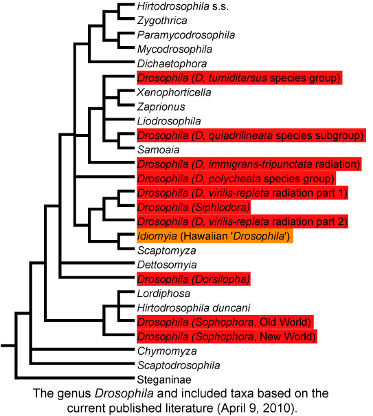
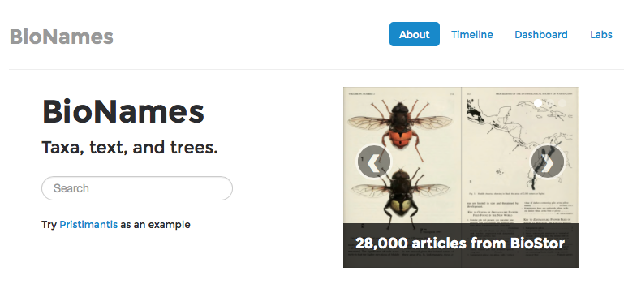
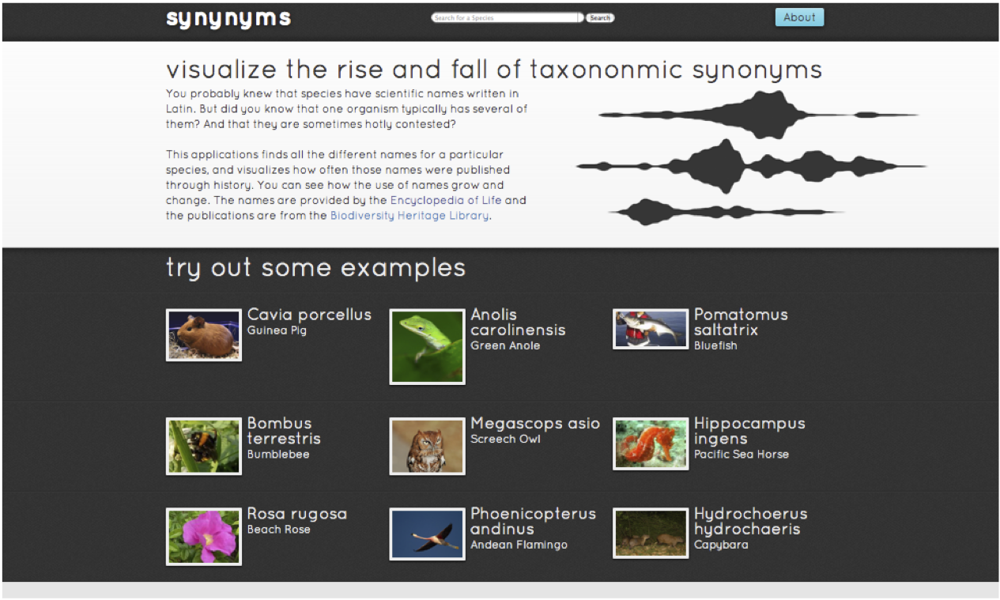
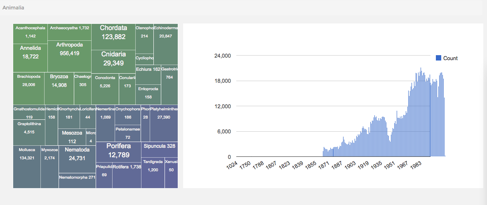
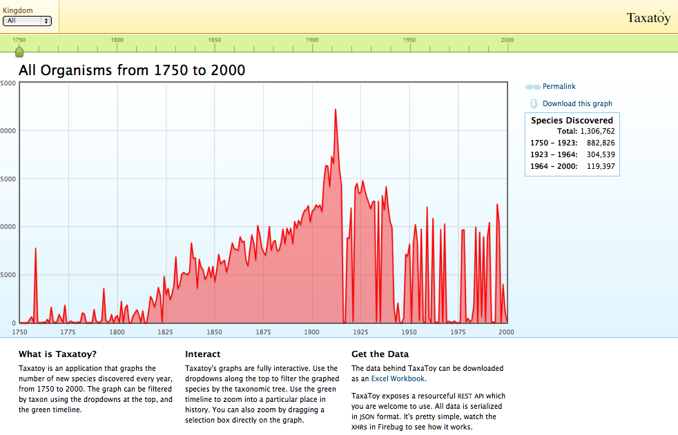

| iPhylo |
| Naming Nature [Kindle] |
A crash course in nomenclature.
Codes of nomenclature exist for the "major" groups of organisms.
While I think most would agree that if we had started nomenclature knowing what we know now about phylogeny, we wouldn't have done it they way we did. However, there is a huge legacy of existing names, and data linked to those names, making fundamental change unlikely.
As an example of the compromise the current system requires, the Microsporidia are treated under the zoological code (see A new dawn for the naming of fungi: impacts of decisions made in Melbourne in July 2011 on the future publication and regulation of fungal names, http://dx.doi.org/10.3897/mycokeys.1.2062), despite being fungi (and hence should be under the botanical code, although fungi are actually more closely related to animals than plants).
Names serve as identifiers, and some have argued that in general identifiers should be opaque (see Universal Resource Identifiers -- Axioms of Web Architecture), that is, we shouldn't read anything into the name itself.
Taxonomic names aren't opaque, although they can mislead us (a species name minor need not actually be small). Binomials in particular are invested with meaning. If two species are in the same genus, we expect that they are more closely related to each other than to a species in another genus. If this isn't the case there is a strong incentive to change the names to reflect the relationship of the taxa. Sometimes this is not a trvial undertaking, as shown by the case of Drosophila melanogaster.
A recent example of the clash between having a name "make sense" and the stability of names is the case of Drosophila melanogaster, perhaps the best known model organism in biology. Based on a recent phylogeny Kim van der Linde argued that because the genus Drosophila melanogaster was paraphyletic, should be renamed Sophophora melanogaster (see Revising the paraphyletic genus Drosophila sensu lato for details).
Below is a tree from TreeBASE showing the relationship between Drosophila species:
Below is a summary of the major groups of Drosophila:
The fundamental problem posed by Drosophila is that the existing taxonomy doesn't fit the tree. To fix this we could:
At core of argument is notion that Linnean names have to match phylogeny.
How would you assess the possible disruption caused by renaming the fruit fly Drosophila melanogaster to Sophophora melanogaster?
How could you deal with Drosophila melanogaster changing its name to Sophophora melanogaster?
Resolving what name to use for a taxon can require extensive bibliographic research, and in theory the entire scientific literature from Linneaus (1758 for animals) onwards is relevant (bacteria started with a clean slate in 1980).
Furthermore, there are few constraints on where a name can be published (but animal names can't be published online only [we've heard of this Internet thingy but we're having no truck with it], although this is changing (plant names can be published online only). As a consequence, names of organisms can be published in very obscure journals.
In an effort to try and link animal names to their original description online I've created http://bionames.org/. Hundreds of thousands of names are linked to the original publication. If the publication is freely available it is displayed on the site.
Browse the examples, or enter the scientific name of an animal you are interested in. Did you find the original description listed? Is it available online?
If two names are the same but refer to different organisms then those names are homonyms. For example, in July 2010 Lambert et al. (The giant bite of a new raptorial sperm whale from the Miocene epoch of Peru, http://dx.doi.org/10.1038/nature09067) published a paper in Nature that described an extinct sperm whale possessing the biggest bite of any tetrapod known. They named this formidable predator Leviathan melvillei, the genus name Leviathan being derived from the Hebrew 'Livyatan', the species name honouring Herman Melville (author of Moby Dick). As appropriate as this name was, it quickly ran foul of the rules of zoological nomenclature because Leviathan had already been used 169 years ago for an extinct species of mammoth (Description of Missourium, or Missouri leviathan, http://dx.doi.org/10.5962/bhl.title.35985). Although the name Leviathan Koch had lapsed into obscurity (as a synonym of Mammut Blummenbach) its existence meant the newly discovered whale had to be renamed, which it duly was in a month after the original publication.
Homonyms cause obvious problems when searching for data. If the same name is used for more than one taxon, then you may get a mixture of data for two unrelated taxa. Databases such as EOL maintain lists of homonyms (see Homonyms on EOL) to keep track of these problematic names.
A special case of homonym are names that are used in different nomenclatural codes, e.g. Morus is both a plant and an animal. Many of these are included in EOL's homonym collection, but there is a database devoted just to hemihomonyms at http://herba.msu.ru/shipunov/os/homonyms/index.php.
Tony Rees' database IRMNG (Interim Register of Marine and Nonmarine Genera) also has an extensive list of homonyms.
Names can change over time, so that a single taxon can acquire a suite of names (synonyms). This can drive people a bit nuts.
Ryan Schenk's http://synynyms.com tool displays the frequency of usage of taxonomic names in literature scanned by the Biodiversity Heritage Library (BHL), and was inspired by Google's Ngram viewer.
Go to http://synynyms.com and look at some example, or try the names of taxa you are interested in.
Bonus question: why has the frequency of usage of names for the Cavia porcellus (the guinea pig) declined in the 20th century?
Objective synonyms occur when only the name changes, we are making no statement about the taxon. For example, if we move Pithecanthropus erectus to the genus Homo we get Homo erectus, which is an objective synonym of i>Pithecanthropus erectus.
Subjective synonyms occur when we assert, based on some data, that two taxa with different names are actually the same thing. It may be based on an explicit analysis using "objective" methods, but it is considered "subjective" in the sense that it isn't simply a logical consequence of nomenclature. An example of a subject synonym is the shrimp Rimicaris aurantiaca (described in A New Species Of Rimicaris (Crustacea: Decapoda: Bresiliidae) From The Snake Pit Hydrothermal Vent Field On The Mid atlantic Ridge, which subsequent genetic data showed likely to be juveniles of an already described species, Rimicaris exoculata (see Molecular systematics of shrimp (Decapoda: Bresiliidae) from deep-sea hydrothermal vents, I: Enigmatic 'small orange' shrimp from the Mid-Atlantic Ridge are juvenile Rimicaris exoculata).
Each of the following taxonomic names in GenBank has problems. Can you discover what they are?
One of the challenges of dealing with biological classifications is simply navigating them. The following are examples of visualising classifications.
This visualisation uses the JavaScript InfoVis Toolkit and is an updated version of a demo done in 2009.
View it at http://iphylo.org/~rpage/phyloinformatics/spacetree/
A webapp to navigate three of the classifications provided by EOL (see EOL iPad web app using jQueryMobile.
View it at http://iphylo.org/~rpage/phyloinformatics/eoliphone/.
This visualisation is an updated version of a demo done in 2008.
View it at http://iphylo.org/~rpage/phyloinformatics/treemap/
For a prettier verson see the EOL Treemap.

In many ways browsing classifications is similar to navigating the file system of a computer. There is a huge computer science literature on this problem, and some examples have made it into Hollywood movies:
The treevis.net site provides an extensive gallery of tree visualisations, and there is a Mendeley group listing the associated publications.
Browse treevis.net and pick a visualisation that you think would be useful for browsing classifications. What properties are looking for?
TreeVis.net is a group in Biological Sciences on Mendeley.
There are various tools for viewing the rate of discovery of new species (more correctly, the rate at which new taxonomic names are published) over time, such as Taxatoy described below. BioNames also has a timeline feature, which we can use to explore rates of new taxa being described.
Go to BioNames and explore the timeline of new taxa. For example, you can see the timeline for animals:
What patterns do you see? Can you explain the peaks and troughs? What do you conclude about the current rate of description of new species?
You can use the treemap to navigate through the timelines. For example, you can navigate to snakes (http://bionames.org/timeline/Animalia/Chordata/Vertebrata/Reptilia/Lepidosauria/Squamata/Serpentes):

Why is there such a peak of new snake names in 2012? (Note, you can click on the peak in the graph to see a list of papers published that year).
We are somewhat fuzzy about the number of species currently described, and estimates of how many vary widely. For an introduction to some recent estimates see How many species are there, and why do we get two very different answers from same data? and Taxonomy - crisis, what crisis?.
A nice tool for visualising our progress in naming nature is Taxatoy
There is some tension between phylogenetics and Linnean names, notably over the issue of ranks. Apart from being essentially arbirary, changing the rank of a taxon (for example, discovering that a family-level taxon is actually nested inside another family-level taxon) means the name ending of at least one name will have to change. Naming schemes for phylogeny that use simple rules for locating taxa on a phylogeny will be looked at in a subsequent lecture.
While an increasing amount of taxonomic literature is available online, there are huge gaps, particularly in the mid to late 20th century. Arguably copyright restrictions are crippling our ability to access basic information about organisms.
There are various tools online for checking taxonomic names, such as: